Lesson 7 · Part 1 · The harness · 5 questions
Tool calls up close
Read first: An agent is a while loop
A tool is three pieces of text the model reads: a name, a description and a JSON schema. A tool call is JSON the model writes back. Everything in between, checking that JSON, running it and choosing what to send back, is your harness's code, and that is where most agents get good or bad.
The idea
Picture a new on-call engineer handed a folder of team scripts. They never read the source. They only see each script's name, a one-line comment and its flags. If the comment says "search logs", they will happily search a whole day of logs and print every line to the terminal. If it says "returns the 50 newest matching lines; narrow the time range if there are more", they use it well on the first try.
The model is that engineer, except it can never open the source. Here is the life of one tool call:
- Definitions become prompt text. The API turns each tool's name, description and schema into text near the very start of the prompt. The model knows only what that text says. It is sent, and paid for, on every request.
- The model writes JSON. It picks a tool by reading the descriptions, then writes the arguments token by token, like any other text. Nothing has run yet.
- The harness checks and runs. Is the tool name real? Do the arguments match the schema? Is it allowed? Only then does ordinary code run it.
- The result goes back as text. Output or error, it becomes a
tool_resultin the conversation. It stays there for the rest of the session and is sent again with every later step.

The loop itself is in An agent is a while loop. This lesson is about the two pieces of text on either side of it: what the model reads before the call, and what it reads after.
Up close
Here is the harness step done properly. Every failure becomes a result the model can read, and the output is trimmed before it enters the context:
from jsonschema import validate
def handle(b): # one tool_use block
def res(text, err=False):
return {"type": "tool_result",
"tool_use_id": b.id,
"content": text,
"is_error": err}
tool = TOOLS.get(b.name)
if tool is None:
return res("Unknown tool: "
+ b.name, True)
try:
validate(b.input,
tool["schema"])
out = tool["run"](**b.input)
except Exception as e:
return res(f"Error: {e}", True)
return res(trim(out))
def trim(out, limit=8000):
if len(out) <= limit:
return out
return (out[:limit]
+ f"\n[cut: {len(out)}"
" chars in total. Use a"
" narrower query.]")Four details are worth knowing (Anthropic's API here; other providers work the same way):
- The JSON can be wrong. The model generates it like prose, so it can send
"2"instead of2, or skip a required field. With"strict": trueon a tool, the API only lets the model pick tokens that keep the JSON valid for your schema (the sampling step from How the next token is chosen, restricted). Valid is not the same as correct, though: a refund of 1250 instead of 12.50 passes any schema. - Errors are results. Return the error as a
tool_resultwith"is_error": true. Don't crash the loop. Anthropic's docs say that when a call is invalid, the model usually retries 2–3 times with corrections before giving up, so tell it what to fix: "Rate limit exceeded. Retry after 60 seconds." beats "failed". - Several calls at once. One reply can contain several
tool_useblocks, such as three file reads. The API doesn't set an order: run independent reads in parallel, and anything with side effects one at a time, in order. Send all the results back in one message, each with its id. Splitting them into separate messages "teaches" the model, from its own history, to stop calling tools in parallel. - Results have no special authority. A result is just text in the context. A web page or ticket that says "ignore your instructions" lands there too (see Prompt injection).
What a good tool looks like
Anthropic's tool docs call detailed descriptions "by far the most important factor in tool performance" and suggest at least 3–4 sentences per tool. Their engineering blog adds that Claude Code caps tool responses at 25,000 tokens by default. For MCP tools it also warns you above 10,000 tokens.
| Vague | Better | |
|---|---|---|
| Name | search | logs_search |
| Description | "Search logs." | What it does, when to use it, when not to, what it returns, its limits |
| Parameters | svc, q | service (an enum of real names), query, minutes |
| Output | Every matching line | 50 newest lines, a total count, and a hint to narrow the search |
| Error | "400" | "No service 'order'. Valid: orders, payments." |
Worked example
An agent investigating an incident calls a log tool that returns 5,000 JSON log lines. At about 40 tokens per line (logs tokenize badly, see Tokens and the context window), that is 200,000 tokens. The session then runs 30 more steps, with the result read from the cache at a tenth of the price each time:
| Raw output | 50 lines + count | |
|---|---|---|
| Tokens added | 200,000 | 2,000 |
| Next 30 steps, cached | 600,000 full-price | 6,000 full-price |
| Lines the model must search | 5,000 | 50 |
One careless tool call costs more than the rest of the session, and it fills a fifth of a 1-million-token window with noise. The fix belongs in the tool, not in the prompt.
Your turn
Question 1 · ~2 min
Your team adds an MCP tool called query, described as "Runs a SQL query." It's meant for the read-only analytics warehouse. While fixing a bug, the agent uses it to look up a live order, and gets stale data. Why did it pick that tool?
Show answer
The description is all the model knows. "Runs a SQL query" matches "look up an order" perfectly. Nothing says which database, that the data is a day old, or when not to use it. Rename it (warehouse_sql) and describe what is in it, how fresh it is, and what to use for live data. If it must never touch production, enforce that with database permissions, not with words.
Question 2 · ~2 min
A teammate's get_logs tool returns every line from the last 24 hours, about 50,000 lines. The agent finds the error in one call, but the rest of the session is slow and expensive, and an hour later it is summarising its history much earlier than usual. Why does one call hurt the whole session?
Show answer
The result never leaves. It sits in the context and is sent again with every later step, so every step pays for it, and it takes a big share of the window, which forces compaction (summarising) early. It also buries the one line that mattered. Make the tool filter: errors only, newest first, a line limit, a total count, and a hint like "narrow the time range".
Question 3 · ~2 min
Your ticket tool returns Error 400 when the ID format is wrong. The agent tries three slightly different IDs, then tells you the ticket system is down. What would have made it succeed?
Show answer
An error that says what to do next. "400" gives the model nothing to act on, so it guesses, and after a few failed guesses it gives up. Return something like "No ticket 'pay 12'. IDs look like PAY-1234. Use tickets_search to find one." Write tool errors for a reader who can't see your code, because that is exactly who reads them.
Question 4 · ~3 min
To speed up your agent, your harness runs every tool call in a reply at the same time with asyncio.gather. One day a reply contains two calls: "apply the migration" and "run the integration tests". The tests fail randomly. What went wrong?
Show answer
The calls depended on each other, and they raced. The API leaves the order to you: it doesn't say that calls in one reply are safe to run at the same time. Run read-only calls in parallel, and run calls with side effects one at a time, in the order the model wrote them. Then send all the results back together in one message.
Question 5 · ~3 min
Stretch: a refund tool's schema says amount is a number of pounds. You turn on strict mode, so every call matches the schema. One day the agent refunds 1250 for an order of £12.50. Didn't strict mode prevent this?
Hint
Show answer
No. Strict mode guarantees the shape, not the meaning. 1250 is a valid number, so it passes. Make units impossible to confuse (amount_pence, an integer, described in the description), and put the business rule in the tool's code: the refund can't be more than the order total. Rules that must always hold belong in code, because the model's JSON is only a request.
Interesting fact: The model that taught itself to use a calculator
In February 2023, months before any big API had a tool-call feature, researchers at Meta AI Research published Toolformer. They took GPT-J, an open 6.7-billion-parameter model, and let it write API calls as plain text in the middle of sentences, like [Calculator(400 / 1400) → 0.29]. The training data labelled itself: the model suggested possible calls all over a large set of web text, the researchers ran them, and kept only the ones whose results made the following words easier to predict. Tools included a calculator, a question-answering system, Wikipedia search, translation and a calendar. On maths word problems, Toolformer chose the calculator for 97.9% of examples and beat GPT-3, a model 26 times larger.
Facts checked: November 2026 (Anthropic API docs: define tools, handle tool calls, parallel and strict tool use; Claude Code MCP docs; Anthropic engineering blog, September 2025; Schick et al., 2023).
Answers
- Question 1
The description is all the model knows. "Runs a SQL query" matches "look up an order" perfectly. Nothing says which database, that the data is a day old, or when not to use it. Rename it (
warehouse_sql) and describe what is in it, how fresh it is, and what to use for live data. If it must never touch production, enforce that with database permissions, not with words. - Question 2
The result never leaves. It sits in the context and is sent again with every later step, so every step pays for it, and it takes a big share of the window, which forces compaction (summarising) early. It also buries the one line that mattered. Make the tool filter: errors only, newest first, a line limit, a total count, and a hint like "narrow the time range".
- Question 3
An error that says what to do next. "400" gives the model nothing to act on, so it guesses, and after a few failed guesses it gives up. Return something like "No ticket 'pay 12'. IDs look like PAY-1234. Use tickets_search to find one." Write tool errors for a reader who can't see your code, because that is exactly who reads them.
- Question 4
The calls depended on each other, and they raced. The API leaves the order to you: it doesn't say that calls in one reply are safe to run at the same time. Run read-only calls in parallel, and run calls with side effects one at a time, in the order the model wrote them. Then send all the results back together in one message.
- Question 5
No. Strict mode guarantees the shape, not the meaning. 1250 is a valid number, so it passes. Make units impossible to confuse (
amount_pence, an integer, described in the description), and put the business rule in the tool's code: the refund can't be more than the order total. Rules that must always hold belong in code, because the model's JSON is only a request.